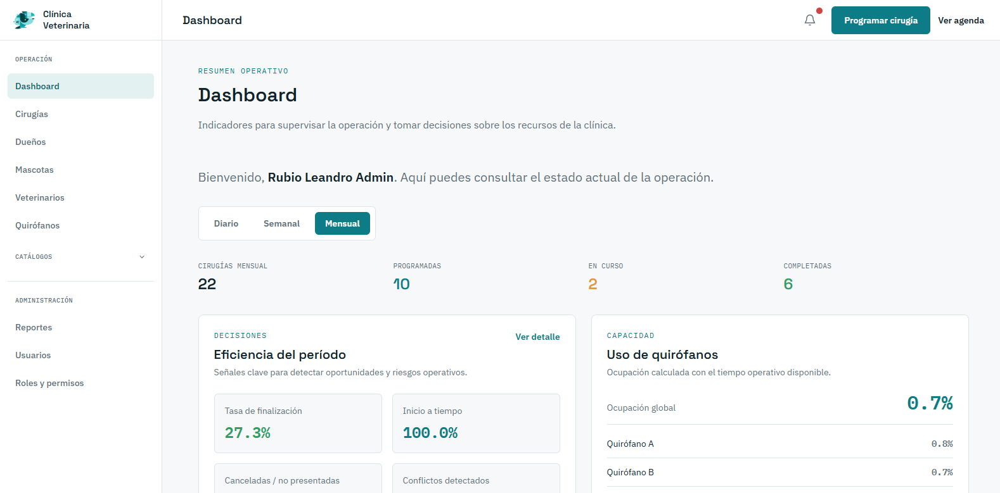
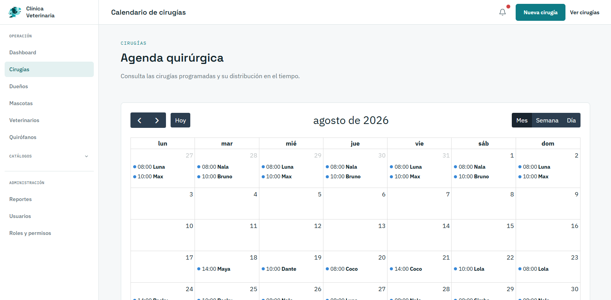

Sistema veterinario
Sistema web para organizar cirugías veterinarias, propietarios, mascotas, veterinarios y quirófanos. Centraliza la agenda, evita cruces de horarios, da seguimiento al estado de cada cirugía y muestra indicadores para tomar decisiones operativas.
# Laravel 13 · PHP 8.4 · MySQL · Blade · Tailwind · Alpine.js · FullCalendar · Pest · Docker## pruébalo
Entra a la demo en vivo ↗ con cualquiera de estas cuentas. La
contraseña de todas es password.
- administrador
- admin@clinica.gob.ec
- administrativo
- ejemplo.administrativo@clinica.local
- veterinario
- ejemplo.veterinario@clinica.local
- propietario
- ejemplo.propietario.01@clinica.local
La demo está en un plan gratuito: si nadie la usó en los últimos minutos, la primera carga puede tardar cerca de un minuto. Los datos se reinician cada vez que el servidor arranca; los correos no se envían, solo se registran.
## contexto
Programar una cirugía en una clínica veterinaria implica coordinar al mismo tiempo un veterinario, un quirófano, una mascota y su propietario. Llevado a mano, eso produce cruces de horario, cirugías sin seguimiento claro y ninguna forma de medir cómo se usan los recursos.
Este sistema centraliza toda la operación quirúrgica de la clínica: impide programar cirugías que se crucen, registra cada cambio de estado, avisa a los propietarios por correo y presenta indicadores operativos en un dashboard y en reportes exportables.
## capturas


## qué hace
- Programación y edición de cirugías con validación de cruces de veterinario, quirófano y horario.
- Flujo de estados: programada, en progreso, completada, cancelada y no presentada.
- Roles y permisos dinámicos (administrador, administrativo, veterinario y propietario).
- Portal de propietarios para consultar sus mascotas y cirugías. Su cuenta se crea automáticamente al registrarlos.
- Reportes diarios, semanales, mensuales o por rango, exportables a CSV y PDF.
- Correos de confirmación y recordatorio, y un comando programado que marca como "no presentada" la cirugía que pasa el tiempo de tolerancia.
## decisiones técnicas
- transacción + bloqueo contra reservas dobles
- Al programar una cirugía, el controlador abre una transacción, bloquea el veterinario y el quirófano seleccionados y solo entonces comprueba los solapamientos. Así, dos personas que agendan al mismo tiempo no pueden pasar la validación a la vez. Al editar, se excluye la propia cirugía para que no se detecte como conflicto consigo misma.
- los conflictos rechazados también se guardan
- Una cirugía en conflicto no se guarda, pero el intento sí: se registra después de revertir la transacción, para que el registro no se pierda junto con la operación fallida. Ese dato alimenta el indicador de conflictos evitados.
- seguridad por capas
- Un middleware de roles restringe módulos completos, las policies controlan cada transición de estado de una cirugía y los Form Requests validan la entrada antes de llegar al controlador.
- métricas en un servicio, no en la vista
ReportServicecalcula todos los indicadores (ocupación de quirófanos, inicio a tiempo, cirugías completadas, conflictos) para un rango de fechas. Las vistas solo presentan los datos, así las reglas de negocio no se duplican en Blade.
## calidad
- Pruebas automatizadas con Pest para autenticación, estados de cirugía y contenido de los correos, ejecutadas en GitHub Actions en cada push.
- Entorno reproducible con Docker / Laravel Sail y Mailpit para probar los correos en local.
- Seeder con un escenario operativo completo para revisar el sistema con datos plausibles.
- Guía técnica con la arquitectura, el flujo de una cirugía y los pendientes técnicos conocidos.